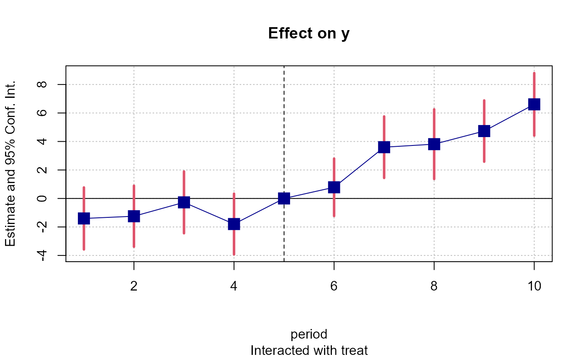

Wald test used to test the joint nullity of a set of coefficients.
wald(x, keep = NULL, drop = NULL, print = TRUE, vcov, se, cluster, ...)A fixest object. Obtained using the methods femlm, feols or feglm.
Character vector. This element is used to display only a subset of variables. This should be a vector of regular expressions (see regex help for more info). Each variable satisfying any of the regular expressions will be kept. This argument is applied post aliasing (see argument dict). Example: you have the variable x1 to x55 and want to display only x1 to x9, then you could use keep = "x[[:digit:]]$". If the first character is an exclamation mark, the effect is reversed (e.g. keep = "!Intercept" means: every variable that does not contain “Intercept” is kept). See details.
Character vector. This element is used if some variables are not to be displayed. This should be a vector of regular expressions (see regex help for more info). Each variable satisfying any of the regular expressions will be discarded. This argument is applied post aliasing (see argument dict). Example: you have the variable x1 to x55 and want to display only x1 to x9, then you could use drop = "x[[:digit:]]{2}". If the first character is an exclamation mark, the effect is reversed (e.g. drop = "!Intercept" means: every variable that does not contain “Intercept” is dropped). See details.
Logical, default is TRUE. If TRUE, then a verbose description of the test is prompted on the R console. Otherwise only a named vector containing the test statistics is returned.
Versatile argument to specify the VCOV. In general, it is either a character scalar equal to a VCOV type, either a formula of the form: vcov_type ~ variables. The VCOV types implemented are: "iid", "hetero" (or "HC1"), "cluster", "twoway", "NW" (or "newey_west"), "DK" (or "driscoll_kraay"), and "conley". It also accepts object from vcov_cluster, vcov_NW, NW, vcov_DK, DK, vcov_conley and conley. It also accepts covariance matrices computed externally. Finally it accepts functions to compute the covariances. See the `vcov` documentation in the vignette.
Character scalar. Which kind of standard error should be computed: “standard”, “hetero”, “cluster”, “twoway”, “threeway” or “fourway”? By default if there are clusters in the estimation: se = "cluster", otherwise se = "iid". Note that this argument is deprecated, you should use vcov instead.
Tells how to cluster the standard-errors (if clustering is requested). Can be either a list of vectors, a character vector of variable names, a formula or an integer vector. Assume we want to perform 2-way clustering over var1 and var2 contained in the data.frame base used for the estimation. All the following cluster arguments are valid and do the same thing: cluster = base[, c("var1", "var2")], cluster = c("var1", "var2"), cluster = ~var1+var2. If the two variables were used as fixed-effects in the estimation, you can leave it blank with vcov = "twoway" (assuming var1 [resp. var2] was the 1st [res. 2nd] fixed-effect). You can interact two variables using ^ with the following syntax: cluster = ~var1^var2 or cluster = "var1^var2".
Any other element to be passed to summary.fixest.
A named vector containing the following elements is returned: stat, p, df1, and df2. They correspond to the test statistic, the p-value, the first and second degrees of freedoms.
If no valud coefficient is found, the value NA is returned.
The type of VCOV matrix plays a crucial role in this test. Use the arguments se and cluster to change the type of VCOV for the test.
data(airquality)
est = feols(Ozone ~ Solar.R + Wind + poly(Temp, 3), airquality)
#> NOTE: 42 observations removed because of NA values (LHS: 37, RHS: 7).
# Testing the joint nullity of the Temp polynomial
wald(est, "poly")
#> Wald test, H0: joint nullity of poly(Temp, 3)1, poly(Temp, 3)2 and poly(Temp, 3)3
#> stat = 23.1, p-value = 1.452e-11, on 3 and 105 DoF, VCOV: IID.
# Same but with clustered SEs
wald(est, "poly", cluster = "Month")
#> Wald test, H0: joint nullity of poly(Temp, 3)1, poly(Temp, 3)2 and poly(Temp, 3)3
#> stat = 170.3, p-value < 2.2e-16, on 3 and 105 DoF, VCOV: Clustered (Month).
# Now: all vars but the polynomial and the intercept
wald(est, drop = "Inte|poly")
#> Wald test, H0: joint nullity of Solar.R and Wind
#> stat = 19.1, p-value = 8.538e-8, on 2 and 105 DoF, VCOV: IID.
#
# Toy example: testing pre-trends
#
data(base_did)
est_did = feols(y ~ x1 + i(period, treat, 5) | id + period, base_did)
# The graph of the coefficients
coefplot(est_did)

# The pre-trend test
wald(est_did, "period::[1234]$")
#> [1] NA
# If "period::[1234]$" looks weird to you, check out
# regular expressions: e.g. see ?regex.
# Learn it, you won't regret it!